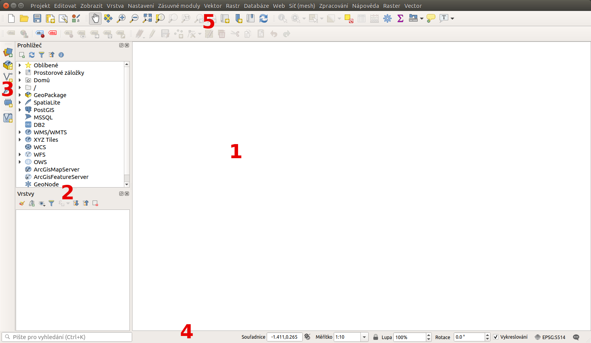
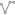
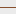
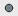
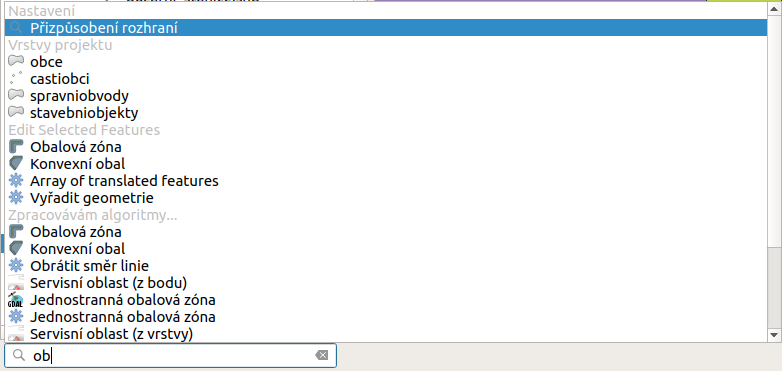
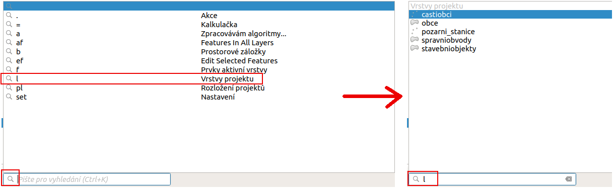
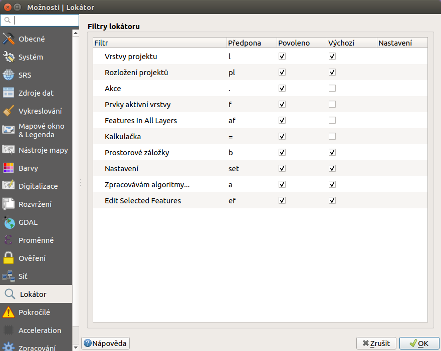
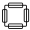
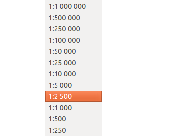
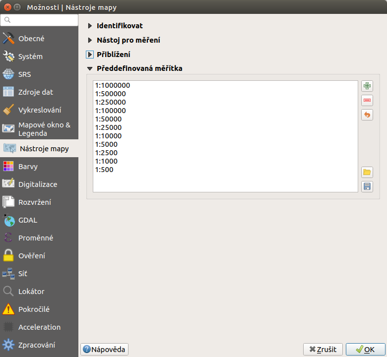

Po spuštění systému QGIS se zobrazí standardní rozhraní.
Na obrázku níže jsou označeny základní části systému.
Tip
Vzhled systému QGIS je možné jednoduše měnit dle
potřeb. Zobrazování jednotlivých nástrojů je možné upravit a
přizpůsobit si tak pracovní prostředí. Pokud budete rozšiřovat
funkčnost systému, tak je dobré si vhodně umístit nové nástroje.

Obr. 23 Základní části systému QGIS (detailní popis částí je níže).¶
V tomto okně se vykreslují všechny zapnuté mapové vrstvy. Vykreslování
odpovídá nastavení každé jednotlivé vrstvy. Pořadí vykreslování
vrstev odpovídá pořadí v panelu vrstev. Ty se tedy překreslují přes
sebe všechny i když se vzájemně plně nebo jenom částečně překrývají.
Pokud překreslování mapového okna trvá delší dobu je vhodné nechat
překreslit pouze nezbytné vrstvy.
Přepínač vrstev zobrazuje všechny přidané vrstvy. Jejich zobrazení
poskytuje rychlou informaci o jejich pozici a grafickém zobrazení v
mapovém okně. Kliknutím pravého tlačítka na vybranou vrstvu se vyvolá
kontextové menu k dané vrstvě. V tomto menu je možné najít vše od
stylování vrstvy až po export dat.
Podle typu ikonky před názvem vrstvy je možné rychle identifikovat,
zda se jedná o  vektorovou nebo o rastrovou vrstvu. U
vektorové vrstvy se typicky rozlišuje mezi polygonovou
(plošnou),  liniovou anebo  bodovou
vrstvou. Zobrazení symbolů záleží na aktuálního nastavení symbologie
dané vrstvy. Pokud nejde o jednoduchý symbol, tak je možné pomocí
trojúhelníčku na začátku řádku rozbalit všechny položky stylování dané
vrstvy. Pokud chceme rychle změnit konkrétní symbol, tak je možné se
pomocí dvoukliku přepnout přímo do editace symbolu. Pokud má vrstva
vícero různých symbolů, tak je možné zapínat symboly každé skupiny
zvlášť přímo pomocí zaškrtávátka u každého symbolu. Není proto nutné
dělat změny v nastavení symbologie (platí u vektorových vrstev).
Vykreslování vrstvy v mapovém okně lze zapnou pomocí zatrhnutí okénka na
úrovni každé vrstvy.
Změnit pořadí vrstev lze pomocí tažení vrstvy na jinou pozici.
V případě práce s velkým počtem vrstev je možné shlukovat tématicky vrstvy do
tzv. skupin. Vytvoření skupiny je pomocí tlačítka Přidat skupinu. Ta se automaticky přidá do seznamu vrstev s výchozím
názvem, který je možné změnit (přes kontextové menu skupiny). Vrstvy lze do
skupiny přidat pomocí přetažení. U skupiny lze vykonávat některé vybrané
funkce, jako i u běžných vrstev a některé jsou specifické.
Vrstvu lze z projektu odstranit. Neznamená to, že by se smazala, pouze nebude
součástí aktuálního projektu. Odstranit vrstvu lze z jejího kontektového menu,
nebo pomocí tlačítka Odstranit vrtvu/skupinu.
Tuto akci lze provést i pro více vrstev naráz. Ty lze ozbačit za pomocí kláves
Ctrl anebo Shift a pak vyvolat kontextové menu pro všechny
označené vrstvy.
Panel prohlížeče slouží k zjednodušení přístupu ke geodatům. Umožňuje
přistupovat k různým typům dat, např. vektorovým, rastrovým, databázím,
službám.
Slouží pro správu datových zdrojů jako jsou adresáře se souborovými
formáty jako např. ESRI Shapefile, databázové zdroje jako PostgreSQL,
MSSQL a pod a v neposlední řadě webové služby, viz
Práce s webovými službami OGC.
Pro lepší orientaci mezi algoritmy, nástroji, vrstvami a dalšími součástmi je
možné používat okno pro vyhledávání - Lokátor.
Zadáním části názvu vyhledávané vrstvy nebo nástroje se filtruje mezi všemi
položkami. Výsledky jsou řazeny do kategorií. Na obrázku je vidět, že po zadání
textu se vyhledají vrstvy obsahující vložený text, níže pak algoritmy s
odpovídajícím názvem, ale i nástroje aplikovatelné na vybrané vrstvy.

Obr. 25 Vyhledávací okno s ukázkou nalezených výsledků toztříděných do jednotlivých
kategorií.¶
Tip
Pokud chceme vyhledávat v konkrétní sekci, například pouze
vrstvu nebo nástroj, tak můžete nastavit filtrování pouze v
konkrétní kategorii. Třídění je možné ovlivnit zadáním parametru
před samotným textem. Parametr je možné napsat přímo jako text,
anebo si vybrat ze seznamu. Seznam se aktivuje po kliknutí do
vyhledávacího řádku. Zkratku buď opíšeme a přidáme za ni mezeru,
anebo ji dvouklikem vložíme. Za zkratku pak píšeme část textu pro
vyhledávání. Poslední variantou je výběr v menu, které se otevře
po kliknutí na symbol lupy.

Obr. 26 Vyhledávací okno s vyhledáváním omezeným pouze na vrstvy v projektu s
ukázkou nalezených výsledků.¶
V případě potřeby je možné upravit nastavení vyhledávání. Je možné nastavit,
ve kterých skupinách se vyhledává, nebo jakými zkratkami se nastavují.
Nastavení je v horním menu Nastavení ‣ Možnosti, záložka
Lokátor.

Obr. 27 Nastavení fungování lokátoru, aktivní skupiny a jejich zkratky.¶
Pole za vyhledávačem je místo, kde se uživateli zobrazují běžné informace.
Příkladem je vypsání zprávy o uložení projektu s vypsáním cesty k souboru
projektu. Kousek dál je místo, kde se zobrazuje ikonka při překreslování
mapového okna. Pokud je zde vykreslená ikonka načítání , tak
se aktuálně překresluje obsah mapového okna. Po ukončení vykreslování tato
ikonka zmizí. Délka překreslování záleží na vykreslovaném obsahu.
Další část stavového řádku slouží pro orientaci v mapovém okně. Zde se
zobrazuje buď aktuální souřadnice ukazatele myši v mapovém okně, nebo tzv.
extent (rozsah území aktuálně zobrazeného v mapovém okně). Ukázka obou možností
je zobrazena na následujícím obrázku. Jako přepínač mezi uvedenými fukcemi
slouží ikona Přepnout rozšíření a zobrazení pozice myši, resp.
Přepnout rozšíření a zobrazení pozice myši.
Obr. 28 Možnosti zobrazení souřadnic ukazatele myši nebo rozsahu mapového okna.¶
Další funkcí je měřítko. Tato funkce zobrazuje aktuální měřítko mapového okna.
Umožňuje také překreslení mapového okna do jiného měřítka pomocí výběru z
předdefinovaného seznamu měřítek.

Obr. 29 Výběr měřítka z předdefinovaného seznamu.¶
Tip
Seznam předdefinovaných měřítek je možné upravit. V menu
Nastavení ‣ Možnosti… záložka Nástroje mapy je
část Předdefinovaná měřítka. Nové měřítko je možné přidat pomocí ikonky
Přidat předdefinované měřítko a nebo odstranit pomocí
Odstranit vybrané.

Obr. 30 Menu pro upravení předdefinovaných měřítek.¶
Vykreslování v mapovém okně je možné nastavit různým způsobem. Standardně se
kresba v mapovém okně překresluje při následujících akcích:
přidání nové vrstvy
posun nebo zoomování mapového okna
změna velikosti QGIS okna
změna viditelnosti vrstvy
V některých případech může překreslování mapového okna trvat déle, než
je vhodné. V takovýchto případech je možné upravit nastavení
vykreslování a stylování jednotlivých vrstev. V
případě, že překreslování není potřebné, tak je možné jej potlačit -
mapové okno se nebude překreslovat. Pro takovéto nastavení je ve
stavovém řádku položka se zaškrtávátkem Vykreslování.
Tip
Pokud potřebujete přerušit vykreslování, tak je to možné
provést pomocí vypnutí překreslování. To se může hodit
zejména při vykreslování náročných vrstev, když je zapotřebí
pouze změnit obsah mapového okna.
Mezi nejdůležitější nastavení patří nastavení souřadnicového systému
mapového okna. Aktuální EPSG kód souřadnicového systému je vidět přímo
ve stavovém řádku vedle ikony .
Poznámka
Podrobnější informace k problematice souřadnicových systémů
ve školení Open Source GIS.
Tip
Souřadnicové systémy je možné vybírat podle EPSG kódu. Po
instalaci je defaultně nastaven souřadnicový systém WGS 84
(EPSG:4326). Pro potřeby zpracování geodat na území ČR se však
většinou používá souřadnicový systém EPSG:5514
(S-JTSK). Nastavení přes stavový řádek je však platné jenom pro
aktuální projekt. Po opětovném spuštění se systém nastaví opět na
výchozí souřadnicový systém. Jak nastavit výchozí souřadnicový
systém je popsáno v kapitole Výběr souřadnicového systému.
Poznámka pro pokročilé
Pokud potřebujete zjistit detaily o jakékoli aktivitě
systému, tak si nechte vypisovat tzv. logovací zprávy. Záložku s
jednotlivými logovacími zprávami je možné otevřít pomocí ikonky
Zprávy. Tyto zprávy jsou podstatné zejména v případě
neočekávaného chování systému.
Hlavní menu se skládá ze dvou základních částí. První je standardní menu v liště
a druhou je nástrojová lišta.
V menu se nachází zejména nástroje pro správu systému a jeho nastavení.
Tip
Nastavení systému je možné změnit přes Nastavení ‣
Možnosti…. Prvním důležitým nastavením je volba souřadnicového systému -
záložka SRS. Zde se nastaví souřadnicový systém pro nový projekt a
zvlášť pro novou vrstvu.
Nástrojová lišta obsahuje základní nástroje pro práci s projektem a vrstvami.
Vypínání a zapínání jednotlivých nástrojových lišt a oken lze provádět pravým
kliknutím na panel a výběrem z nabídky.
Nástroje pro měření jsou závislé na souřadnicovém
systému. V případě nastavení zeměpisného souřadnicového systému
bude výsledek měření (délky a plochy) uveden ve stupních. Pro tento
účel je nutné mít správně nastavený mapový souřadnicový
systém. Měření v mapovém okně také respektuje nastavení
přichytávání (tzv. snapping).
U měření délky a plochy je rovněž volba typu výpočtu. Buď se výpočet
provádí jako kartézský - výpočet v kartézských souřadnicích (rovina),
nebo elipsoidický - výpočet na sféře (elipsoidu).
V mapovém okně lze použít pro měření následující nástroje z hlavního menu.
Pro měření se kliknutím vybere požadovaný nástroj. Zobrazí se dialogové okno k
danému typu měření, kde lze vybrat jednotky měření. Kliknutím do mapy se začne
kreslit požadovaný útvar pro měření. Během kreslení se určovaná hodnota
upravuje dle polohy kurzoru. Definování prkvu kresbou lze ukončit pravým
kliknutím. Nové měření lze začít pomocí tlačítka Nové.
Nástroj pro identifikaci prvku slouží pro získání informací o interaktivně
vybraném prvku v mapovém okně. Pro identifikaci je možné použít menu
Zobrazit ‣ Identifikovat prvky, použít klávesovou zkratku
Ctrl+Shift+I nebo ikonu Identifikovat prvky.
Po vyvolání nástroje pro identifikaci se kliknutím v mapě vyberou prvky, které
chceme identifikovat.
Výsledky identifikace se zobrazují v pop-up okně ve formě stromové
struktury. Pokud vybíráme prvky ve vícero vrstvách, tak první úrovní
rozdělení je jméno vrstvy. Na další úrovni je atribut nastavený v menu
vrstvy Vlastnosti ‣ Zobrazení. Na další úrovni se
zobrazují 3 skupiny informací:
Odvozené - informace, které nejsou mezi atributy, ale jsou určené při
identifikaci (plocha, obvod, délka, poloha - dle typu prvku),
Akce - interaktivní položky, které vyvolají akci (menu vrstvy
Vlastnosti ‣ Akce),
Vlastnosti - seznam atributů daného objektu (z atributové tabulky).
Při vícero vrstvách lze v mapovém okně nastavit režim výběru (v spodní
části okna) a formu zobrazování.
Při pravém kliku na detail v tabulce se vyvolá kontextové menu, které
umožňuje různé možnosti od zoomování na vybraný prvek, kopírování
hodnot, práci s výběrem až po nastavení dané vrstvy.
{kind=link}
{kind=link}
{kind=link}
{kind=link}
{kind=link}
{kind=link}
{kind=link}
{kind=link}
{kind=link}
{kind=link}

 Přidat předdefinované měřítko a nebo odstranit pomocí
Přidat předdefinované měřítko a nebo odstranit pomocí
 Odstranit vybrané.
Odstranit vybrané.{kind=link}
{kind=link}
 Oddálit -
přiblíží/oddálí vybranou oblast, pro přibližování bez vybrání
oblasti lze použít i kolečko myši
Oddálit -
přiblíží/oddálí vybranou oblast, pro přibližování bez vybrání
oblasti lze použít i kolečko myši Přiblížení na vrstvu - přiblíží na
rozsah vybrané vrstvy
Přiblížení na vrstvu - přiblíží na
rozsah vybrané vrstvy Přiblížení na všechny vrstvy -
přiblíží na všechny vrstvy v projektu
Přiblížení na všechny vrstvy -
přiblíží na všechny vrstvy v projektu Obnovit - obnoví zobrazení všech nahraných dat
Obnovit - obnoví zobrazení všech nahraných dat{kind=link}
{kind=link}
{kind=link}
{kind=link}
 Vybrat prvky oblastí nebo jednoklikem -
nejjednodušší tvorba výběru
Vybrat prvky oblastí nebo jednoklikem -
nejjednodušší tvorba výběru Vybrat prvky pomocí vzorce - viz kapitola
Atributové dotazování
Vybrat prvky pomocí vzorce - viz kapitola
Atributové dotazování{kind=link}
{kind=link}
{kind=link}
{kind=link}
{kind=link}
{kind=link}
{kind=link}
{kind=link}
{kind=link}
{kind=link}